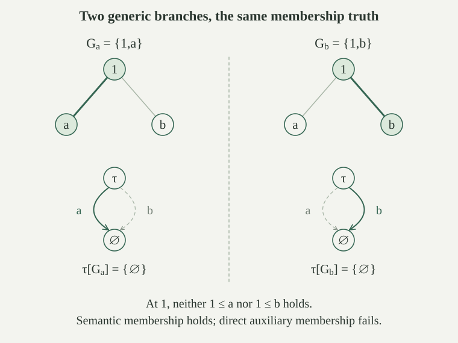

Let \(M\) be an externally countable transitive ZFC-model, let \(P,\le,1_P\in M\) be a forcing order, and let \(\bar\tau\) be a finite tuple of \(P\)-names in \(M\). For a fixed ordinary membership-language formula \(\varphi(\bar x)\), define semantic forcing by
The tuple \(\bar\tau[G]\) consists of the name values. Satisfaction is ordinary first-order satisfaction in the nonempty transitive set \(M[G]\); the definition does not assume that all ZFC axioms have already been established there. The existence of a generic through every condition prevents this definition from being vacuous.
It is immediately monotone: if \(q\le p\) and \(p\Vdash\varphi\), then \(q\Vdash\varphi\). Any filter containing \(q\) also contains \(p\) by upward closure.
The auxiliary formula language is generated from atoms \(x\in y\) and \(x\ne y\) by negation, disjunction and existential quantification. Free variables can be assigned names from \(M\); quantifiers append a new variable to the context. Its value interpretation evaluates all assigned names in \(G\), interprets the atoms by actual membership and inequality, and uses ordinary classical truth clauses in \(M[G]\).
There is a translation \(\varphi\mapsto\varphi^*\) from the ordinary membership-language syntax. Membership stays membership; equality becomes negated inequality; translate the connectives recursively using
Translate falsity as \(\exists z\,(z\ne z)\), with \(z\) a fresh bound placeholder. The extra quantifier is internal to that translated subformula and introduces no free variable. Equivalently, translate conjunction by \(\neg(\neg A^*\lor\neg B^*)\). This is a recursive translation of the ordinary membership syntax, not a new interpretation of its equality symbol.
For every nonempty actual-membership structure \(D\), ordinary formula \(\varphi\), and assignment \(\bar a\) to its free variables, \(D\models\varphi[\bar a]\) if and only if the value interpretation of \(\varphi^*\) is true at \(\bar a\). The translation has exactly the same free-variable context.
Induct on the ordinary scoped formula. Membership is unchanged, and actual equality is exactly negated actual inequality. The translated falsity is false because no object differs from itself. Implication uses the classical equivalence \(A\to B\) with \(\neg A\lor B\), together with the induction equivalences for both children.
For a universal formula the translation says that there is no value for the newly appended variable making the translated body false. By induction on the body this is exactly the ordinary universal condition. Appending that variable in both syntaxes preserves the same old coordinates, and the bound placeholder introduced for falsity stays local to its subformula. This proves both the satisfaction equivalence and preservation of scope.
We define an auxiliary forcing relation \(p\Vdash^*A\), which is different from semantic forcing. First define it for membership and inequality between names, together with their negations. Order unordered name-rank pairs by the lexicographic order of
At a given pair, membership is defined by
For inequality, \(p\Vdash^*\sigma\ne\tau\) means that either some \((\theta,q)\in\sigma\) has \(p\le q\) and \(p\Vdash^*\neg(\theta\in\tau)\), or some \((\theta,q)\in\tau\) has \(p\le q\) and \(p\Vdash^*\neg(\theta\in\sigma)\). Thus an attached member of one name is certified to be absent from the other.
For either atomic formula \(A\), once its positive relation at this rank pair is defined, define its negation by
All conditions quantified here belong to \(P\), and all names are ground-model names. The inequality clause is symmetric in the two names.
The atomic clauses define unique relations. Each of the four atomic and negated-atomic relations is definable inside \(M\), from the forcing order.
Whenever a clause replaces one name by an attached child, that name's rank strictly decreases by the name-rank equation. Reordering the two ranks does not change their unordered pair. Decreasing one coordinate of a pair, keeping the other fixed, either decreases its minimum, or preserves the minimum and decreases its maximum. Thus every recursive call in a positive atomic clause uses a smaller displayed pair. Its negative relation at that smaller pair is already available. Defining a negative relation at the current pair only uses the positive relation just defined, so no circular call is introduced.
On any set of rank pairs the lexicographic order is well founded: a nonempty subset has a least first coordinate, then a least second coordinate among those with that first coordinate. To compute the relation for two particular names, choose an ordinal \(\beta\) larger than their ranks. The names of rank below \(\beta\) form the set \(N_\beta\). All needed children remain in this set. Well-founded set recursion therefore constructs the atomic truth values for every condition and every pair of names in \(N_\beta\).
These calculations agree on overlapping bounds by uniqueness. Existence of such a bounded recursive calculation, with the displayed clauses, is a first-order set-theoretic condition. It defines each relation on arbitrary supplied names. The construction and its uniqueness are provable in ZF, so they are available internally in \(M\). Its internal hierarchy stages need not equal the external stages; the definition uses the stages computed in \(M\) and its own names. Each internal stage is closed under taking attached children, and all quantified conditions range over the same actual \(P\). Transitivity and uniqueness of the bounded recursive calculation therefore identify its internal output with the external auxiliary relation on those names.
Extend \(\Vdash^*\) to every auxiliary formula by recursion on its finite syntax:
For every formula use \(p\Vdash^*\neg A\) exactly when no \(q\le p\) auxiliary-forces \(A\), as in the atomic definition. These are syntactic clauses. In particular the auxiliary disjunction clause chooses a disjunct at \(p\), and its existential clause chooses a particular name at \(p\).
For each fixed auxiliary formula \(A(\bar x)\), definability of auxiliary forcing means that some ordinary set-theoretic formula \(\mathrm{Force}^*_A(p,\bar\tau,P,\le)\), interpreted in \(M\), defines this relation on its names. Atomic definability is established above; the displayed clauses and negation construct the defining formula inductively. For existence this is an ordinary unbounded internal quantifier over names, not a set collecting every name.
If \(p\Vdash^*A\) and \(r\le p\), then \(r\Vdash^*A\), for every auxiliary formula and assignment of names.
First use rank-pair induction for atoms and their negations. A membership witness \((\theta,q)\) with \(p\le q\) also has \(r\le q\); the smaller-pair induction hypothesis transfers \(p\Vdash^*\neg(\theta\ne\sigma)\) to \(r\). The same argument transfers the absent-member witness for inequality. For negation, every extension of \(r\) is an extension of \(p\), so the assertion that none auxiliary-forces the positive atom remains true.
Then induct on the whole formula. A disjunct or a witness name at \(p\) remains available at \(r\) by induction on its child. For any negated formula, the same inclusion of sets of extensions proves monotonicity directly. This establishes all cases.
For each fixed auxiliary formula \(A(\bar\tau)\), the set \(D_A=\{p:p\Vdash^*A\text{ or }p\Vdash^*\neg A\}\) belongs to \(M\) and is dense. Every \(M\)-generic filter \(G\) therefore satisfies exactly one of
Definability and Separation put \(D_A\) in \(M\). For a condition \(p\), if some \(q\le p\) auxiliary-forces \(A\), that \(q\) lies in \(D_A\). If none does, \(p\Vdash^*\neg A\) by definition, so \(p\) itself lies in \(D_A\). This proves density, hence genericity gives at least one of the alternatives.
If \(p,q\in G\) witnessed both, directedness supplies \(r\in G\) with \(r\le p,q\). Monotonicity gives \(r\Vdash^*A\), contradicting \(q\Vdash^*\neg A\). Thus at most one holds. Consequently existence of a condition in \(G\) auxiliary-forcing \(\neg A\) is equivalent to nonexistence of one auxiliary-forcing \(A\).
Fix a name \(\tau\) and formulas \(B_\theta\), one for each attached child under consideration. Suppose truth already corresponds to a condition in \(G\) auxiliary-forcing \(B_\theta\). Then the following are equivalent: some \((\theta,q)\in\tau\) has \(q\in G\) and \(B_\theta\) true in \(M[G]\); some \(p\in G\) and \((\theta,q)\in\tau\) have \(p\le q\) and \(p\Vdash^*B_\theta\).
From the first assertion, the assumed truth correspondence supplies \(r\in G\) auxiliary-forcing \(B_\theta\). Refine \(r,q\) to a common \(p\in G\). Monotonicity preserves the auxiliary assertion and \(p\le q\), proving the second assertion with the same attached pair. Conversely \(p\le q\) and \(p\in G\) put \(q\in G\) by upward closure, while the assumed truth correspondence makes \(B_\theta\) true. These operations retain the actual attached witness.
For each of \(A=\sigma\in\tau,\ \sigma\ne\tau,\ \neg(\sigma\in\tau),\ \neg(\sigma\ne\tau)\),
Induct on the unordered name-rank pair, assuming all four correspondences at every smaller pair. For membership, its defining auxiliary witness is an attached \((\theta,q)\in\tau\), an extension \(p\le q\), and \(p\Vdash^*\neg(\theta\ne\sigma)\). The last statement involves a smaller rank pair. By its induction hypothesis and , existence of these witnesses with \(p\in G\) is equivalent to an active attachment with \(\theta[G]=\sigma[G]\). By the evaluation rule this is exactly \(\sigma[G]\in\tau[G]\). This proves both directions while preserving the attached condition.
For inequality, the same argument changes an auxiliary absent-member witness into an active child of one name whose value does not belong to the other value. Conversely, if the two values differ, Extensionality for actual sets supplies an element in one and not the other. Evaluation represents that element by an active attached child on that side. The smaller-pair induction hypothesis for negated membership, followed by the common-refinement lemma, supplies the required auxiliary witness. Thus the positive inequality correspondence holds as well.
Now apply separately to these two positive atoms. A condition in \(G\) auxiliary-forces the negation exactly when no condition in \(G\) auxiliary-forces the positive atom. By the two just-proved correspondences, this is exactly the negation of the corresponding value assertion. This proves the two negative cases at the current pair and completes the rank induction.
For every auxiliary formula \(A\), every tuple of ground-model names, and every \(M\)-generic \(G\),
Induct on \(A\). The atomic cases are . For negation, the decision lemma changes an auxiliary witness for \(\neg B\) into absence of any auxiliary witness for \(B\). By induction this is precisely that \(B[G]\) is false.
For disjunction, the defining clause says that a condition auxiliary-forces one disjunct. Thus existence of a condition in \(G\) witnessing that clause is equivalent to existence of a witness for one disjunct; induction gives exactly the ordinary disjunction truth clause. The direction starting with a true disjunct uses its own witnessing condition.
For \(\exists x\,B(x)\), a true existential has a witness in \(M[G]\), and by definition of this set that witness is \(\tau[G]\) for some name \(\tau\in M\). Apply induction to the body with this appended name to obtain a condition in \(G\) auxiliary-forcing \(B(\tau)\). The existential clause then applies. Conversely an auxiliary witness gives a particular \(\tau[G]\in M[G]\) and, by induction, truth of the body there. All assignments and appended variables remain arbitrary throughout the induction.
For every auxiliary formula \(A\) and condition \(p\), semantic forcing of its value interpretation satisfies
If \(p\Vdash^*\neg\neg A\) and \(G\) is generic through \(p\), the auxiliary truth lemma makes \(\neg\neg A[G]\) true, hence makes \(A[G]\) true. This proves semantic forcing.
Conversely suppose \(p\Vdash A\), but \(p\not\Vdash^*\neg\neg A\). By the negation clause some \(q\le p\) auxiliary-forces \(\neg A\). Choose an \(M\)-generic filter through \(q\). It also contains \(p\). Semantic forcing makes \(A[G]\) true, whereas auxiliary truth makes \(\neg A[G]\) true, a contradiction. Thus \(p\Vdash^*\neg\neg A\), proving the equivalence.
For every fixed ordinary membership-language formula \(\varphi(\bar x)\), ground-model names \(\bar\tau\), and \(M\)-generic filter \(G\),
Moreover a set-theoretic formula, depending on the fixed syntactic formula \(\varphi\), defines \(p\Vdash\varphi(\bar\tau)\) inside \(M\). One such definition is \(p\Vdash^*\neg\neg\varphi^*(\bar\tau)\).
The ordinary syntax translation and double-negation equivalence give the displayed defining relation. Auxiliary definability provides an ordinary set-theoretic defining formula for this fixed \(\varphi\).
If \(\varphi(\bar\tau[G])\) is true, translate it and apply auxiliary truth to get \(p\in G\) with \(p\Vdash^*\varphi^*(\bar\tau)\). For every other \(M\)-generic filter \(H\) through this same \(p\), auxiliary truth makes \(\varphi^*(\bar\tau[H])\) true. Translation truth makes the original formula true there, so \(p\Vdash\varphi(\bar\tau)\). Conversely a semantic forcing condition in \(G\) gives the asserted truth directly from its definition.
This is a theorem scheme with a separate defining formula for each fixed \(\varphi\). It does not assert that the ground model has a single truth predicate for all its formulas or for all formulas of the extension.
Its formula-by-formula definability supplies the exact Separation name and the bounds used to establish Replacement in the extension.
If \(p\Vdash\exists x\,\varphi(x,\bar\tau)\), then some \(q\le p\) and ground-model name \(\sigma\) satisfy \(q\Vdash\varphi(\sigma,\bar\tau)\). If \(p\Vdash(\varphi\lor\psi)\), some \(q\le p\) semantically forces one of the two disjuncts.
Choose a generic \(G\) through \(p\). In the existential case its extension has a witness, represented by a ground-model name \(\sigma\). The ordinary truth lemma supplies \(r\in G\) forcing the witnessed matrix. Refine \(r,p\) inside \(G\) to \(q\); monotonicity of semantic forcing gives the required assertion. In the disjunction case, one disjunct is true in this extension; apply the same truth lemma and common-refinement argument to that disjunct.
The conclusion concerns a stronger condition and, for existence, a specified name there. It does not replace semantic forcing's quantification over generic extensions by the auxiliary clauses at the original condition.
For any name \(\sigma\), define auxiliary equality by \(\neg(\sigma\ne\sigma)\). Does every condition auxiliary-force it? Does that by itself make the membership clauses of the two relations identical?
Every condition does auxiliary-force \(\neg(\sigma\ne\sigma)\). Otherwise some \(q\le p\) auxiliary-forces \(\sigma\ne\sigma\). A generic through \(q\) exists, and the auxiliary truth lemma would make \(\sigma[G]\ne\sigma[G]\), a contradiction.
This does not identify direct auxiliary membership with semantic membership. For example, let \(P=\{1,a,b\}\), with \(a,b\le1\) incompatible and no stronger conditions below either, and let \(M\) contain this finite order. Put \(\tau=\{(\varnothing,a),(\varnothing,b)\}\). Every \(M\)-generic filter meets the dense set \(\{a,b\}\); hence every such filter gives \(\varnothing\in\tau[G]\). Thus \(1\Vdash\varnothing\in\tau\). But \(1\not\Vdash^*\varnothing\in\tau\): its membership clause would need an attached condition \(q\in\{a,b\}\) with \(1\le q\), which neither satisfies. The double-negated auxiliary relation, rather than the direct one, agrees with semantic forcing.
